Hauptsätze
Es sei A(t)=[aij(t)]i,j=1n eine Matrix-Funktion auf 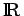, wobei jede Komponente 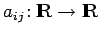 als stetige Funktion vorausgesetzt wird, und es sei 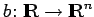 eine stetige Vektorfunktion auf . Dann heißt
inhomogene lineare Differentialgleichung erster Ordnung im 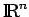 und
die zugehörige homogene lineare Differentialgleichung erster Ordnung.
- 1. Hauptsatz über homogene lineare Differentialgleichungen:
- Jede Lösung von (17.13a) existiert auf ganz . Die Gesamtheit aller Lösungen von (17.13b) bildet einen n-dimensionalen Untervektorraum LH der C1-glatten Vektorfunktionen über
 .
.
- 2. Hauptsatz über inhomogene lineare Differentialgleichungen:
- Die Gesamtheit aller Lösungen LI von (17.13a) ist ein n-dimensionaler affiner Unterraum der C1-glatten Vektorfunktionen über in der Form 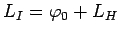, wobei 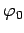 eine beliebige Lösung von (17.13a) ist.
Seien 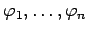 beliebige Lösungen von (17.13b) und 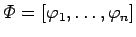 die zugehörige Lösungsmatrix. Dann genügt 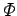 auf der Matrix-Differentialgleichung 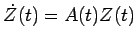, wobei 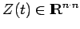 ist. Bilden die Lösungen eine Basis von 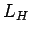, so heißt Fundamentalmatrix von (17.13b). Bezüglich einer Lösungsmatrix von (17.13b) ist 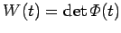 die WRONSKI-Determinante. Für sie gilt die Formel von LIOUVILLE:
Für eine Lösungsmatrix ist 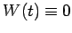 auf oder 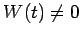 für alle 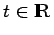. Das System ist also genau dann eine Basis von , wenn 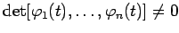 für ein t (und damit für alle) ist.
- 3. Satz über die Variation der Konstanten:
- Sei eine beliebige Fundamentalmatrix von (17.13b). Dann läßt sich die Lösung
 von (17.13a) mit Anfang p zur Zeit 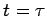 in der Form
von (17.13a) mit Anfang p zur Zeit 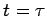 in der Form
darstellen.